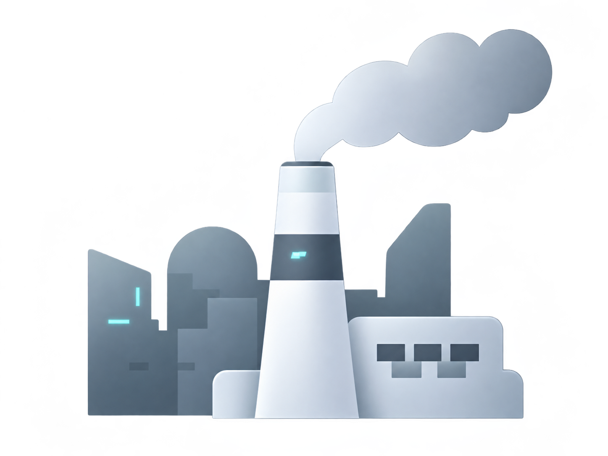
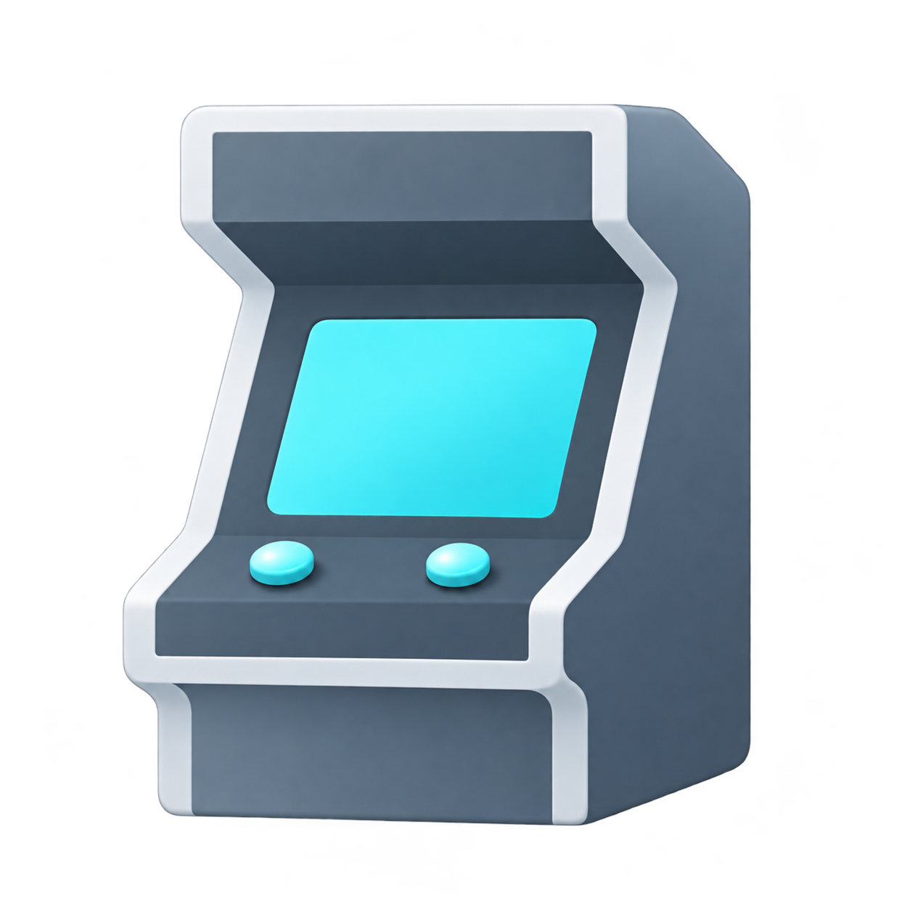

프로젝트 보기 ↗ 환경의 진실을 기록하고, 변화의 가능성을 연결하다 E.FACT는 청주 지역의 소각장 과밀집 문제를 알리고, 환경오염에 대한 인식과 시민 참여의 중요성을 전달하는 프로젝트입니다. 오염된 미 래 청주를 배경으로 한 체험형 게임을 통해 환경 위기의 심각성을 경험하고, 아카이브 웹사이트에서 관련 정보와 기록을 살펴볼 수 있습니 다. 나아가 시민의 참여로 완성되는 인터랙티브 콘텐츠를 통해 개인의 작은 관심이 공동의 행동으로 확장되는 과정을 시각화합니다. E.FACT는 단순한 문제 제기를 넘어, 환경의 진실을 마주하고 지속 가능한 미래를 함께 만들어가는 경험을 제안합니다. 고비주 김혜진 ※ 프로젝트 내 일부 이미지들은 인공지능(AI)를 이용해 연출된 이미지입니다. 01 진행단계 기록으로 마주하는 환경의 진실, 연대로 만드는 내일 오염된 미래 청주를 탐험하는 체험형 게임과 환경 문제를 기록한 아카이브 웹사이트, 시민의 참여로 완성되는 인터랙티브 콘텐츠를 통해 환경 문제를 직접 경험하고, 작은 관심이 환경 회복을 위한 연대로 이어질 수 있도록 구성하였습니다. 01 오염된 청주를 탐험해 보세요 찬호를 조작해 순돌이와 함께 오염된 미래의 청주를 탐험합니다. 무 심천과 상당산성, 동물원 등 익숙한 장소를 이동하며 숨겨진 기록과 단서를 수집하고, 환경오염의 원인과 진실을 밝혀 나갑니다. 02 청주의 미래를 선택해 보세요 탐험 과정에서 수집한 기록을 바탕으로 청주의 미래를 직접 선택해 보세요. 환경이 회복되는 미래와 오염이 지속되는 미래 중 하나를 선 택하며, 작은 결정이 가져올 변화를 생각해 볼 수 있습니다. 03 선택의 결과를 확인해 보세요 플레이어가 선택한 결말에 따라 달라진 청주의 모습을 확인해 보세요. 서로 다른 미래를 마주하며 환경 문제에 대한 선택과 행동이 도시의 변 화에 어떤 영향을 미치는지 되돌아볼 수 있습니다. 04 함께 연대의 나무를 완성해 보세요 게임을 통해 환경 문제를 경험한 후, 시민 연대 인터랙션에 참여해 보 세요. 이름과 느낀점을 작성하면, 참여의 흔적이 연대나무에 더해지 며, 작은 실천이 모여 하나의 변화를 만들어 갑니다. 02 상황분석 우리가 살아가는 도시는 수많은 폐기물을 처리하며 유지되고 있지만, 그 과정에서 발생하는 환경적 부담은 특정 지역에 집중되기도 합니다. 청주 역시 소각시설의 밀집으로 인한 환경오염과 주민 건강에 대한 우려가 이어지고 있습니다. 우리는 익숙함 속에 가려진 환경 문제를 다시 바라보고, 지속 가능한 미래를 위해 무엇이 필요한지 고민하고자 합니다. 청주 소각장 문제에 대한 인식과 시민들의 관심이 필요합니다. 소각시설의 밀집으로 발생하는 환경오염은 지역 주민들의 건강과 일상에 영향을 미칠 수 있습니다. 이러한 문제를 해결 하기 위해서는 환경 위기의 심각성을 인식하고, 더 나은 미래를 위한 시민들의 적극적인 관심과 실천이 필요합니다. 뿐만 아니라, 언론을 통해 일상에 영향을 준다고 봤음에도 청주 시민 대다수는 나와는 거리가 먼 이야기 같다고 답했다. 매일 매우 심각하게 느낀다 언론을 통해 보았지만 나와는 거리가 먼 이야기 같다 12% 48% 34% 평소에 아예 생각해 본 적이 없다 청주 소각장 과밀집과 시민 인식의 간극 청주 소각장의 운영 현황과 폐기물 증가 추이를 분석한 결과, 대기질·생활환경·주민 건강 등 다양한 영향에 미칠 수 있어, 지속적인 관리와 시민들의 관심이 필요합니다. 03 문제도출 청주 소각장 과밀집 문제는 지속되고 있지만, 시민들의 관심과 인식은 부족합니다. 이를 직접 체감하고 자발적인 참여로 이어질 수 있는 경험이 필요합니다. 04 인사이트 분석을 바탕으로, 시민들이 문제를 인식하고 직접 경험하며, 참여로 이어지는 인식 전환의 흐름을 도출했습니다. 문제 인식 직접 체험 참여 연대 지속적 관심 청주 소각장 문제와 영향을 알린다. 게임을 통해 환경 위기를 간접적으로 경험한다. 연대 활동으로 환경 회복에 함께 참여한다. 웹사이트를 통해 지속적인 관심을 유도한다. 따라서, ‘알리고·체험하고·참여하는’ 과정을 통해 시민들의 인식과 행동 변화를 이끄는 것이 필요합니다. 인사이트를 바탕으로, 시민의 관심과 참여를 이끌어 낼 수 있는 서비스를 제안합니다. 05 타겟 설정 및 분석 청주 소각장 과밀집 문제를 막연히 인지하고 있으나, 그 영향을 직접 체감하고 해결을 위한 시민 연대로 나아갈 기회가 부족한 청주 시민을 주요 타깃으로 설정했습니다. 청주 소각장 문제에 함께 대응할 시민 청주시민은 소각장 과밀집과 대기오염 문제를 막연히 체감하지만, 시설 분포와 환경 영향에 대한 정보는 쉽게 접하기 어렵습니다. 직접 보고, 탐색하고, 참여하는 경험에 더 잘 반응합니다. 06 컨셉 알아보고, 경험하고, 연대하다 실제 데이터로 청주의 소각장 과밀집 문제를 알아보고, 게임으로 미래의 변화를 경험하며, 인터랙션을 통해 시민의 목소리로 연대하는 참여형 프로젝트입니다.  알아보기 웹사이트를 통해 청주 소각시설의 분포, 운영 현황,소각 과정과 환경 영향을 실제 정보와 데이터로 확인합니다.  경험하기 아케이드 게임을 통해 과밀집이 만든 청주의 미래를체험하고, 환경 문제를 감각적으로 이해합니다. 연대하기 연대의 나무 인터랙션에 참여해 메세지를 남기고,더 나은 환경을 위한 시민들의 목소리를 함께 확장합니다. 07 결론 E.FACT는 실제 데이터와 가상 체험을 통해 청주 소각시설 과밀집 문제를 전달하고, 환경 문제에 대한 인식이 공감과 시 민 연대로 확장될 수 있는 참여형 경험을 제안합니다. 환경을 향한 관심이 모여, 청주의 변화를 만드는 시작이 되기를 바랍니다. 08 디자인 서비스경험디자인 전시 속 캐릭터와 세계관을 굿즈로 확장하여, 관람객이 전시의 경험과 환경에 대한 메시지를 일상에서도 이어갈 수 있도록 했습니다. 인터페이스디자인 웹사이트를 통해 청주 소각시설의 현황과 환경 정보를 직관적으로 탐색하고 이해할 수 있도록 설계했습니다. 인터랙션디자인 1 게임을 통해 오염된 청주의 미래를 탐험하고, 단서를 수집하며 소각시설 과밀집 문제의 심각성을 직접 체험할 수 있도록 설계했습니다. 인터랙션디자인 2 연대의 나무를 통해 시민들의 환경 보호 참여를 유도하고, 작은 실천이 모여 청주의 변화를 만들어가는 과정을 시각적으로 표현했습니다. E.FACT 환경의 진실을 기록하고, 변화의 가능성을 연결하다 E.FACT는 청주 소각장 과밀집 문제와 시민 참여의 중요성을 알리는 프로 젝트입니다. 오염된 미래 청주를 탐험하는 게임으로 환경 위기를 체험하고, 웹사이트에서 관련 기록을 살펴봅니다. 시민 참여로 완성되는 인터랙션을 통해 작은 관심이 연대와 행동으로 이어지는 과정을 보여줍니다. ※ 프로젝트 내 일부 이미지들은 인공지능(AI)를 이용해 연출된 이미지입니다. 고비주 김혜진 01 진행단계 기록으로 마주하는 환경의 진실, 연대로 만드는 내일 오염된 미래 청주를 탐험하는 체험형 게임과 환경 문제를 기록한 아카이브 웹사이트, 시민의 참여로 완성되는 인터랙티브 콘텐츠를 통해 환경 문제를 직접 경헙하고, 작은 관심이 연대로 이어질 수 있도록 구성하였습니다. 02 상황분석 상황 분석 문장 도시에서 발생하는 폐기물이 증가하면서 처리 과정의 환경적 부담도 커지 고 있습니다. 특히 청주는 소각시설이 밀집되어 있어 환경오염과 주민 건강 에 대한 우려가 지속되고 있습니다. 연간 약 2.5만 톤 소각중 연간 소각하는 쓰레기량 증가하는 소각률 퍼센트에 따른 매년 소각되는 쓰레기량 단위: 톤 25,164 24,614 24,533 24,695 2021 2022 2023 2024 출처 - 지표누리 e-나라지표(2024 기준) 상황분석 내용에 대한 결론을 간단하게 문장으로 작성 해 주세요. 상황 분석 결론 작성 03 문제도출 배경에 대한 내용 작성 청주 소각장 과밀집 문제는 지속되고 있지만, 시민들의 관심과 인식은 부족 합니다. 이를 직접 체감하고 자발적인 참여로 이어질 수 있는 경험이 필요 합니다. 뿐만 아니라, 언론을 통해 일상에 영향을 준다고 봤음에도 청주 시민 대다수는 나와는 거리가 먼 이야기 같다고 답했다. 매일 매우 심각하게 느낀다 언론을 통해 보았지만 나와는 거리가 먼 이야기 같다 12% 48% 34% 평소에 아예 생각해 본 적이 없다 04 인사이트 인사이트 한문장 정리 분석을 바탕으로, 시민들이 문제를 인식하고 직접 경험하며, 참여로 이어지는 인식 전환의 흐름을 도출했습니다. 문제 인식 참여 연대 청주 소각장 문제 와 영향을 알린다. 연대로 환경 회복 에 참여한다. 직접 체험 지속적 관심 게임을 통해 간접 적으로 경험한다. 웹사이트를 통해 관심을 유도한다. 인사이트를 바탕으로, 시민의 관심과 참여를 이끌어 낼 수 있는 서비스를 제안합니다. 05 타겟설정 및 분석 청주 소각장 문제에 함께 대응할 시민 청주시민은 소각장 과밀집과 대기오염 문제를 막연히 체감하지만, 시설 분포와 환경 영향에 대한 정보는 쉽게 접하기 어렵습니다. 직접 보고, 탐색하고, 참여하는 경험에 더 잘 반응합니다. 06 컨셉 알아보고, 경험하고, 연대하다 실제 데이터로 청주의 소각장 과밀집 문제를 알아보고, 게임으로 미래의 변화를 경험하며, 인터랙션을 통해 시민의 목소리로 연대하는 참여형 프로젝트입니다. 알아보기 웹사이트를 통해 청주 소각시설의 분포, 운영 현황, 소각 과정과 환경 영향을 실제 정보와 데이터로 확인합니다. 경험하기 아케이드 게임을 통해 과밀집이 만든 청주의 미래를 체험하고, 환경 문제를 감각적으로 이해합니다. 연대하기 연대의 나무 인터랙션에 참여해 메세지를 남기고, 더 나은 환경을 위한 시민들의 목소리를 함께 확장합니다. 07 결론 환경을 향한 관심이 청주의 변화로 E.FACT는 실제 데이터와 가상 체험을 통해 청주 소각시설 과밀집 문제를 전달하고, 환경 문제에 대한 인식이 공감과 시민 연대로 확장될 수 있는 참 여형 경험을 제안합니다. 08 디자인 서비스경험디자인 전시 속 캐릭터와 세계관을 굿즈로 확장하여, 관람객이 전시의 경험과 환경에 대한 메시지를 일상에서도 이어갈 수 있도록 했습니다. 인터페이스디자인 웹사이트를 통해 청주 소각시설의 현황과 환경 정보를 직관적으로 탐색하고 이해할 수 있도록 설계했습니다. 인터랙션디자인 1 게임을 통해 오염된 청주의 미래를 탐험하고, 단서를 수집하며 소각시설 과밀집 문제의 심각성을 직접 체험할 수 있도록 설계했습니다. 인터랙션디자인 2 연대의 나무를 통해 시민들의 환경 보호 참여를 유도하고, 작은 실천이 모여 청주의 변화를 만들어가는 과정을 시각적으로 표현했습니다.